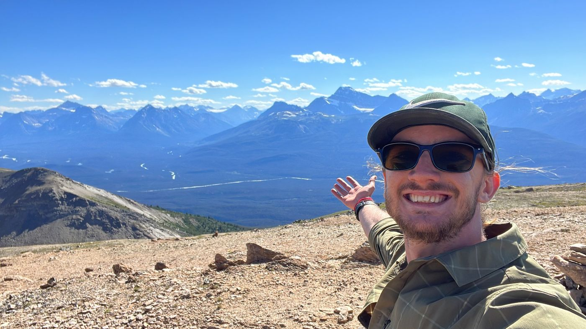
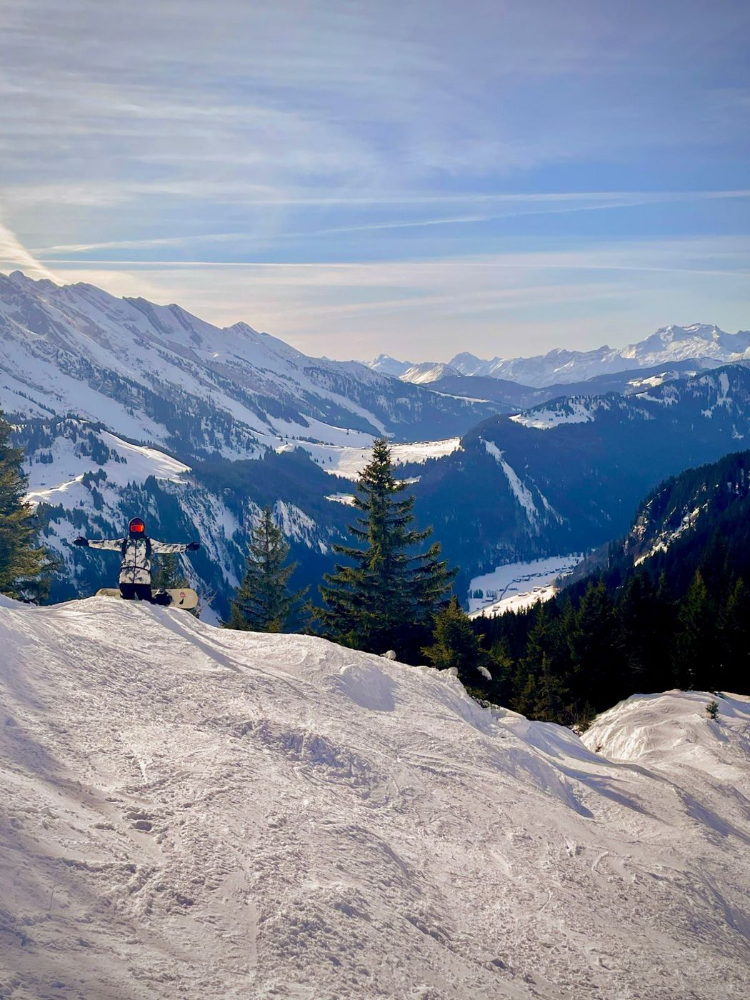

It started in Brazil.
I was born and raised in Brazil. My mom gave me music, and my family gave me a habit of being curious about everything.

What it gave me
- Portuguese
- Curiosity
- Creativity
I'm Gabriel. I build automations, websites and software for businesses. The way I work comes from everything that happened before.
Here are the pieces, and how they came together.
ScrollI was born and raised in Brazil. My mom gave me music, and my family gave me a habit of being curious about everything.
We moved to Calgary when I was age. That's where I started my first businesses (business 1, business 2), studied degree at university, and spent three years as a full-stack developer.
My dad is a personal trainer. He taught me to show up every day.

In 2024 I spent a year travelling across South America with one backpack. I worked remotely, learned Spanish, surfed, and got comfortable being uncomfortable.

I moved to France in year, learned French, and started German. I launched my career here, and the Alps are my weekend office.

Today I run an automation studio for busy founders, I'm building software for private chefs with Elisa, and I'm helping my dad launch FITtoExcel in Canada.
Business sense, engineering, four languages, and a habit of figuring things out. That's what you get when we work together.
Tell me what's eating your week. I'll tell you what we can take off your plate.